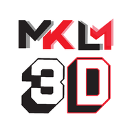

MKLM3D · Carnet de commandes 3DPolitique de confidentialité
Application concernée : Carnet de commandes 3D (MKLM3D), y compris la connexion Google « MKLM3D Carnet ».
Ce que MKLM3D reçoit
Rien. Les commandes, clients, factures et réglages sont enregistrés sur l'ordinateur de la personne (fichier commandes.db) et, si elle le relie, dans son propre compte Google (Google Agenda, Google Drive, script Google Apps Script). MKLM3D n'a pas accès à ces données et ne les collecte pas.
Connexion Google « MKLM3D Carnet »
Quand la personne choisit « Se connecter avec Google », le Carnet demande les autorisations suivantes :
- son adresse e-mail (pour afficher avec quel compte elle est connectée) ;
- créer et mettre à jour des projets Google Apps Script, et leurs déploiements.
Ces autorisations servent uniquement à créer le script du Carnet dans le compte Google de la personne et à le mettre à jour quand une nouvelle version sort. Le Carnet ne lit ni ne modifie aucun autre projet. Le jeton de connexion est gardé sur l'ordinateur de la personne ; il n'est jamais envoyé à MKLM3D. Les données obtenues par les API Google ne sont ni vendues, ni partagées, ni utilisées à des fins publicitaires ; leur usage respecte le Règlement sur les données utilisateur des services d'API Google, y compris les exigences d'utilisation limitée.
Retirer l'accès
La personne peut retirer cet accès à tout moment depuis son compte Google (myaccount.google.com/permissions), ou en se déconnectant dans le Carnet. Le Carnet continue de fonctionner ; seules les mises à jour automatiques du script s'arrêtent.
Autres connexions
Le Carnet contacte GitHub pour ses mises à jour et la vérification de la licence, et le compte Google de la personne. Rien d'autre.
Contact
Pour toute question : mklm3d@techlm3d.fr.
MKLM3D · mklm3d@techlm3d.fr